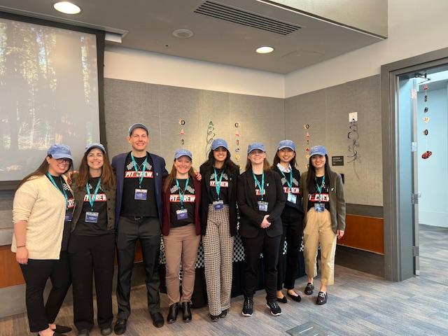
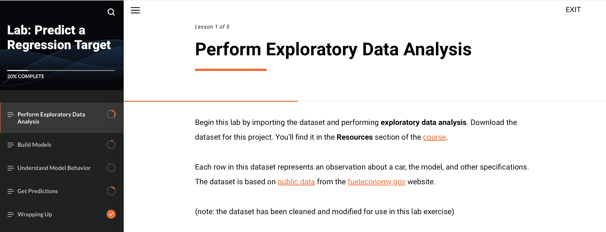

Workshops & Outreach
15+ years of experience empowering learners through teaching, technical training, and scalable enablement.
With more than 15 years of experience in teaching and technical enablement, I specialize in designing and scaling programs that help learners translate complex concepts into real-world skills. My background includes developing online courses, creating hands-on labs and certification programs, delivering webinars and workshops, and coaching both technical and non-technical audiences. I am passionate about building engaging, accessible learning experiences that empower people to get the most out of data.
Monthly Webinar Host (EmpowerHour, Truveta): Lead recurring live sessions to train healthcare data scientists and analysts on deriving insights from EHR data and maximizing value from Truveta Studio.
Workshop Leader (Truveta): Deliver in-person and online workshops for customers, covering advanced technical concepts in EHR analytics. Recently led a 2-hour hands-on workshop at the Truveta Symposium (“Prose Grand Prix”) teaching effective use of Truveta’s proprietary programming language, Prose.

Enablement Study Author (Truveta): Designed and published an enablement study with end-to-end workflows in Python, R, and SQL, providing practical guidance for common EHR use cases.
Course Creator (Udemy): Built a structured onboarding and training program for new analysts, including replication studies, demo certifications, and applied projects.
Curriculum Developer & Instructor (DataRobot University): Created 50+ labs and recorded video sessions covering applied machine learning and AI for a global audience.

Media Appearance: Demonstrated research techniques—including the effects of reward and play—by tickling rats on live television, making science accessible and engaging to the public.

Invited Speaker: Presented to postdoctoral scholars on alternative careers in science, sharing career development strategies and pathways beyond academia.

Graduate Teaching Assistant: Taught and supported graduate-level coursework in research methods and statistics, mentoring students and leading technical instruction.